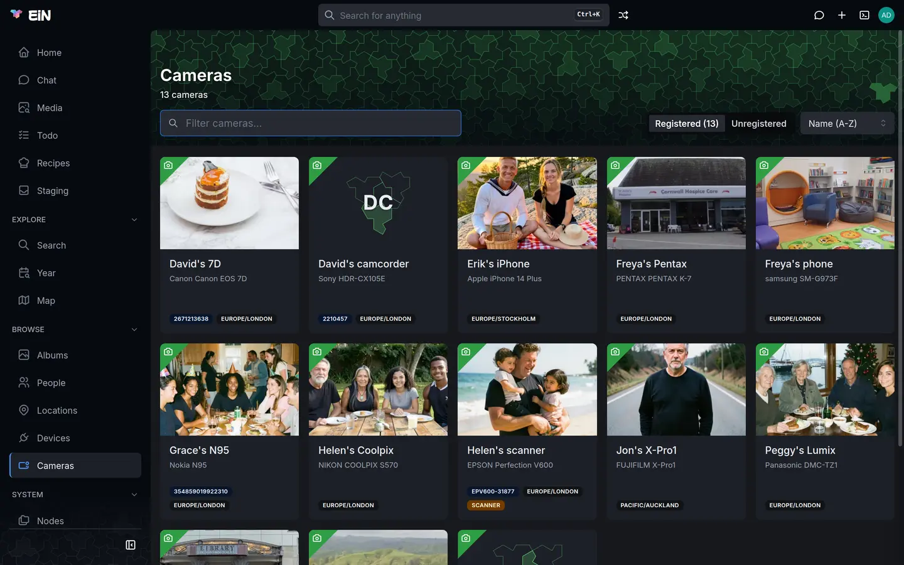

A camera is what took pictures for your archive: a camera, a phone, a scanner or a camcorder. This page is for family members and administrators who register cameras, say who owned them and set their clocks right. The routes a phone or a GPS tracker recorded are tracks, on Tracks and trips.
What registering a camera gives you
EiN reads the camera's name out of every picture, but until the camera is registered that is all it knows: the viewer shows the make and model the file names, and nothing else. Once a camera is registered, the pictures it took are linked to it, and:
- the viewer's camera line names the camera, links to its page and says who owned it (see The details panel);
- the camera's page gathers everything it took, who owned it and when, and the track it records into, if it has one;
- an album's Info tab lists the cameras that took its pictures, and its Map tab draws the tracks they record into (see Albums);
- the Search page finds cameras and narrows albums by them, and
@in a search box picks one to keep the pictures it took (see Search and the finder); - the camera's Timezone, Scanner or digitizer and Video times in UTC settings correct the dates of every picture it took.
How EiN recognises a camera
When a file arrives, EiN reads what the camera wrote into it: the make (the EXIF tag Make), the
model (Model) and, when the camera writes one, its serial number (SerialNumber,
InternalSerialNumber or DeviceSerialNo). Some camcorders write the make and model as
DeviceManufacturer and DeviceModelName instead. These three together are the file's
fingerprint, and EiN looks for the registered camera that has the same one:
- a camera with the same serial number;
- otherwise, a camera with the same make and the same model, also when the file carries a serial number that no camera has.
The camera's name plays no part. The make and model are compared exactly as the camera writes
them, so a camera registered with the make Nikon does not match files that say
NIKON CORPORATION.
EiN does this when it first reads the file, when you register the camera and when you change its make, model or serial number: registering a camera, or giving it a new fingerprint, links the files already in the archive that carry it. Link existing media on its page looks again for any it missed (see Link the files a camera missed).
Two things a fingerprint cannot do:
- Tell two phones of the same model apart. A serial number identifies one camera body; a make and model identify only a model line, and most phones write no serial number. If two people in the family have the same phone model, EiN cannot tell their pictures apart, and all of them are linked to one of the two cameras.
- Match a file that names no camera. Many messaging apps remove the make and model from the pictures they send, and a file without them matches nothing. You can link such files by hand in the terminal (see From the terminal).
A camera's fingerprint has nothing to do with the fingerprints EiN takes of the pictures themselves to find copies; those are described in Duplicates.
The Cameras page
Open Cameras in the sidebar, under Browse.


- The header counts the registered cameras (13 cameras). The filter box (Filter cameras…) matches the name, make, model and serial number as you type.
- Show switches between Registered (N) and Unregistered, the cameras EiN has seen in the pictures that match no registered camera.
- Sort offers Name (A-Z) (the default), Name (Z-A) and Make / model. Your choice is remembered in this browser. It has no effect on the unregistered list.
- Each card shows the camera's cover, its name, its description or else its make and model, and badges: the serial number, the time zone, scanner and video UTC. Click a card to open the camera's page.
When nothing is registered yet, the page says No cameras registered yet: "The cameras and phones that took the pictures. Unregistered lists the ones the archive has already seen." with Show unregistered and, when you are signed in, New camera.
Register a camera EiN has already seen
The quickest way to register a camera is from the pictures it took.
- On the Cameras page, choose Show → Unregistered. The first time in a visit, EiN looks through the files it has read for cameras that match nothing registered. The list reads: "Cameras found in the indexed media that match nothing in the registry. Registering one lets its photos be linked to it, and its timezone and owners apply."
- Find the camera. Each card shows a suggested name (the model, with the make in front when the
model does not start with it, such as
Canon EOS 7DorPanasonic DMC-TZ1), the make and model, the serial number when there is one, and how many files it took (N files). The cameras with the most files come first. - Click Register on its card. The Register Camera dialog opens with Name, Make, Model and Serial number filled in from the files.
- Change Name to what the family calls the camera, such as
David's 7D. Leave Make, Model and Serial number as they are: they are what the files are matched on. - Under Timezone, choose the time zone its clock was set to, and turn on Scanner or digitizer or Video times in UTC if they apply (see Clocks, time zones and scanners).
- Click Register. The files the camera took are linked to it and dated by its settings, and the camera's page opens. The more files carry its fingerprint, the longer this takes: some minutes for a camera with tens of thousands of pictures.
Rescan at the top of the unregistered list looks again, for instance after a large import. When every camera is registered, the list says "Every camera the media names is registered (N files matched)." With many unknown cameras it shows the most used ones and says "Only the most-used cameras are listed; there are more."
When a card says "registered as …, but unmatchable"
Sometimes a camera with that name already exists, but without the make, model or serial number its files carry, so nothing is matched to it. Its card then has the badge registered as <name>, but unmatchable and the button Add fingerprint instead of Register, because registering would make a second copy of a camera EiN already knows.
Click Add fingerprint. EiN writes the make, model and serial number from the card into the existing camera and links the files they identify. When it is done, a message says "Linked N files to <name>." or "<name> now carries the fingerprint, but no unclaimed files matched it." This is quick for a camera with a serial number and slow for one known only by its make and model, which can take minutes in a large archive.
The button is there only if you may change that camera; otherwise the card has no button.
Register a camera by hand
Register a camera by hand when EiN has not seen it in any picture yet: a scanner before the scans arrive, or a camera whose files you are about to import.
- Open the Create menu (the plus in the top bar) and choose Camera, or click New camera on an empty Cameras page. The Register Camera dialog opens.
- Fill in the fields below. Only Name is required.
- Click Register. The camera's page opens. With a serial number, or both a make and a model, the files already in the archive that carry them are linked to it first.
| Field | What to enter |
|---|---|
| Name | What the family calls it, such as Helen's scanner. The name also gives the camera's folder in the tree, so two cameras cannot have the same name. |
| Make | "As the camera writes it in exif: what files are matched on." For example Canon. |
| Model | "As the camera writes it in exif." For example Canon EOS 5D Mark III. |
| Serial number | "Tells one body apart, where make and model tell only the model." Optional. |
| Timezone | "The zone its clock was set to." Optional. |
| Scanner or digitizer | "Its EXIF camera dates describe digitisation, not when the photograph was taken." |
| Video times in UTC | "Its videos keep their recording time in UTC, as phones do." |
To copy the make and model exactly, open a picture the camera took in the viewer and open
Details at the foot of the details panel. Among the EXIF tags it lists are Make, Model and,
when the camera writes one, SerialNumber (see The Details section).
A camera without a serial number and without both a make and a model is never matched to any file.
Its page says so: "No serial and no make/model — nothing is matched to this camera automatically;
camera-link --camera links files to it by hand."
Anyone signed in can register a camera. Changing it afterwards, with the buttons this page describes, is offered to whoever may change it, which the camera's Share dialog shows and sets (see Sharing).
A camera's page
Click a card on the Cameras page, or the camera's name in the viewer. The page's address is
/cameras/ and the camera's folder name, such as /cameras/Davids_7D, and the Media tab adds
?tab=media.
Under the name, the header shows the current owners (up to three, then "and N more"), how many files the camera took and in which years, such as 75 files · 2025–2026 (N+ files when counting stopped at its limit), and the camera's labels. For those who may change the camera, the corner has Share and Edit, and the ⋮ menu has Add event and Move to trash. On a phone they are all under ⋮.
| Tab | What it shows |
|---|---|
| Info | The page opens here: the camera's timeline, and beside it its settings, owners, track and description (see below). |
| Media | Every file linked to the camera, by date. Select pictures to act on them from the selection bar, for example Add to album or Set time (see The selection bar). |
On the Info tab, the timeline on the left is the camera's history: when each owner started and stopped using it, the events written on it, and the albums holding pictures it took. When it has none, it says "Nothing recorded for <camera> yet. Owners with dates, and albums with photos it took, appear on its timeline." On the right, and above the timeline on a phone:
- Camera lists Make, Model, Serial number, Timezone, "Capture dates: Scanner dates suppressed" for a scanner and "Video times: UTC"; with nothing but a name it says "Nothing recorded beyond the name." Under them is Link existing media (see Link the files a camera missed).
- Owners lists everyone who has owned it, with the dates (see Say who owned a camera).
- Track links to the track the camera records into, or says "It records into no track." (see A phone that records where it was). It is left out for those who may not change the camera when there is no track.
- About shows the description, when there is one.
The Media tab is the place to correct a camera whose clock was wrong: select its pictures and use Set time, as Dates and places of pictures describes.
Move to trash sends the camera to your trash, and the message's Undo brings it back (see Your profile, favourites and trash).
Link the files a camera missed
Files are linked to their camera when EiN first reads them, when the camera is registered and when its make, model or serial number is changed. A file can still miss its camera, such as one that was read while linking was not running.
- Open the camera's page. The Info tab opens.
- Click Link existing media under Camera. The text under it explains: "Files are linked to their camera when they are indexed, when it is registered and when its make, model or serial number is changed. This looks again for the files that carry its fingerprint and are linked to no camera, such as one indexed while linking was not running."
- Wait for the message, such as "Linked 412 files and updated dates on 37.", or "Nothing new to link or update — every matching file already has this camera policy."
Linking also dates the files again by the camera's settings, which is what "updated dates" counts. Files that are already linked to another camera are left with it.
The button is shown only to those who may change the camera, and only when the camera has a serial number or both a make and a model. A camera that has both is looked for both ways. The more files carry its fingerprint, the longer it takes: some minutes for a camera with tens of thousands of pictures.
Change a camera's settings
- On the camera's page, click Edit. The Edit camera dialog opens.
- Change what you need: Name, Make, Model, Serial number, Timezone (a list of
time zones you can type in, such as
Pacific/Auckland), Scanner or digitizer, Video times in UTC, Description and Labels. - Click Save.
A changed Timezone, Scanner or digitizer or Video times in UTC re-dates every file already linked to the camera, and the page says "Re-dated N linked files.", or "Removed scanner dates from N linked files." when you turned the scanner setting on.
A changed Make, Model or Serial number links the files already in the archive that carry the new fingerprint and are linked to no other camera, and the page says "Linked N files.", or "Linked N files and updated dates on M." when linking also re-dated files of the camera. A camera with a serial number is linked quickly; one known only by its make and model can take minutes in a large archive, and Save waits for it. Files linked under the old fingerprint stay linked.
Clocks, time zones and scanners
Three settings tell EiN how to read a camera's dates. Each one applies to every file linked to the camera, and changing it re-dates them.
- Timezone: the time zone the camera's clock was set to. A camera's clock writes a time without
a zone, and EiN reads it in this zone, with the summer time of the year the picture was taken.
A zone the camera wrote into the file itself comes first. Without a Timezone, EiN uses the
archive's own time zone. Set it for a camera bought abroad, or one left on home time during a
trip: Helen's Coolpix stayed on London time when she took it to Wellington, and with its
Timezone set to
Europe/London, EiN reads its clock as London time and gets the moment of each picture right. - Scanner or digitizer: the camera's clock records when a file was scanned, not when the photograph was taken, so EiN dates pictures neither by it nor by a date in the file names it gives them. Pictures with no other date stay undated until someone gives them one. Files brought in through a staging category of the kind Scans are treated as scans whatever camera made them; this setting matters for scans uploaded straight into an album, copied in over SFTP, or already in the library.
- Video times in UTC: phones keep their videos' recording time in UTC. Turn this on for a phone whose videos come out off by its time zone.
Dates and places of pictures explains how EiN chooses a picture's date and time zone, and Date scans of old prints and slides how scans are dated.
A camera's Timezone is about its clock alone. The days of a track's trips are cut in the track's own time zone, set on the track (see How a track travels).
Say who owned a camera
A camera can have several owners over the years. The viewer lists them under the camera's name, each with the dates, such as Owned by Ruby Wrenfield (2023–), so you can tell whose camera it was when a picture was taken.
- Open the camera's page. Owners is on the right of the Info tab, the tab it opens on.
- Click Add owner beside the heading.
- Under Person, choose the person.
- Fill in From and To as a year, a month or a day:
2005,2005-06or2005-06-20. Leave To empty while they still own it, and leave both empty if you do not know the dates. - Click Add owner.
The list shows the current owners first, then the earlier ones, with their dates: "2019 – 2023", "since 2019", "until 2023", or "dates unknown". A current owner with a start date has the badge current. Use the pencil beside an owner to change the dates (Save changes), and the bin to remove them; EiN asks "Remove <person> as an owner of <camera>?" before it does. With no owner, it says "Nobody is recorded as owning this."
An owner without a To date counts as a current owner, in the page's header and under Owners. Dated ownership appears on the camera's timeline, on the Info tab, as "<person> started using <camera>" and "<person> stopped using <camera>". A date that is not a year, month or day is refused with a message ending in "is not a date (YYYY[-MM[-DD]])".
The owners' homes also count as the home bases of the camera's track while the track has none of its own (see Home bases).
A phone that records where it was
A phone can keep where it was as well as take pictures: it posts its position as it moves, or leaves a GPX file of its route. That route is a track of its own (see Where tracks come from). Link the phone's camera to it, and:
- the camera's page links to the track, under Track on the Info tab;
- an album with pictures the camera took draws the track on its Map tab (see Choose which tracks the map shows);
- a GPX file that names the camera, by its name, its make and model, or its serial number, joins the track when it is dropped in staging (see GPX files in staging);
- while the track has no home bases of its own, the homes of the camera's owners count (see Home bases).
To link it:
- Open the camera's page. Track is on the right of the Info tab, with the line "A phone or camera that also records where it was keeps that in a track."
- Click Set track, choose the track in the list (Pick a track), and click Set.
Change track picks another, and the cross beside the track (Take the track away) takes the link away; the track and its positions stay as they are. Both are offered to those who may change the camera. A camera that records nowhere, such as Helen's Coolpix or a scanner, needs no track.
Write something on a camera's timeline
To keep a story with a camera, such as where it was bought or when it broke, add an event:
- On the camera's page, open the ⋮ menu and choose Add event.
- Fill in Date (such as
2005-06-15) and Description ("What happened"). Both are needed. Written by is you unless you choose someone else. - Click Add event.
The event appears on the camera's timeline, on its Info tab. Events are described in full in Family tree, events and homes.
The camera's cover
The picture on a camera's card and behind its page's header is its cover: the newest picture linked to it, by the date it was taken. The cover moves on by itself as newer pictures are linked. A camera that took only videos, such as a camcorder, gets the poster frame of its newest video once that video has been processed; recordings are never used. The card of a camera with no pictures shows a placeholder with its initials.
The Web UI has no button to choose a camera's cover. In the terminal you can link a picture
as the camera's coverPhoto yourself, and a cover chosen this way is kept. In the demo, Ruby's
iPhone is the folder /archive/cameras/ruby-iphone:
# in EiN's terminal
ln -sf /archive/albums/wellington-christmas-2025/IMG_0650.HEIC /archive/cameras/ruby-iphone/coverPhotoTo go back to the automatic cover, remove the link with rm /archive/cameras/ruby-iphone/coverPhoto
and run camera-cover /archive/cameras/ruby-iphone.
If something goes differently
| What you see | Why | What to do |
|---|---|---|
| The viewer shows only a make and model where the camera's name should be. | The camera is not registered, or the picture was read while linking was not running. | Register it from Unregistered, or click Link existing media on its page. |
| A camera's Media tab says "Nothing is linked to this camera yet: no file carries its make and model or serial number. If files from it are missing, “Link existing media” on its Info tab looks again." | No file names this camera as the camera has it, or its files were read while linking was not running. | Compare its Make and Model with the Make and Model in a picture's Details, and Edit them to match; saving links the files. Otherwise click Link existing media on the Info tab. |
| The Media tab says "Nothing is linked to this camera yet, and nothing can be: give it a serial number, or both a make and a model." | The camera has no fingerprint. | Edit it and fill in Make and Model exactly as the files have them; saving links the files. |
| Link existing media finds nothing, but pictures from the camera are missing from its page. | The make or model differs from what the files say; the files are linked to another camera; or they name no camera at all. | Compare with the Make and Model in the viewer's Details. For files linked elsewhere or naming no camera, use camera-relink --force or camera-link --camera in the terminal. |
| Pictures from two people's phones are mixed up on one camera. | The phones are the same model and write no serial number. | EiN cannot tell them apart. Link one person's pictures by hand with camera-link --camera. |
| A camera's pictures are some hours off. | Its clock was set to another time zone. | Set its Timezone; see Clocks, time zones and scanners. |
| A phone's videos are off by exactly its time zone. | The phone keeps video times in UTC. | Turn on Video times in UTC for it. |
| Scans are dated to the day they were scanned. | The scanner is not registered with Scanner or digitizer. | Register it with the setting on, or turn it on in Edit camera. |
Registering says camera-create: /archive/cameras/…: already exists. |
A camera with that name exists already. Punctuation such as an apostrophe is left out of the folder name, so Davids 7D and David's 7D clash. |
Choose another name, or open the existing camera. |
| An album's map does not draw the route a phone recorded. | The phone's camera is not linked to its track. | Set track on the camera's Info tab; see A phone that records where it was. |
| Edit, Link existing media, Add owner or Set track is missing. | You may not change this camera. | Ask the person who registered it, or an administrator. |
From the terminal
Each camera is a folder under /archive/cameras; ls /archive/cameras lists their names, and the
link to the track a camera records into is its child track. The commands below are in the
archive command reference, and every one takes --help. Those that start with
camera- can also be typed as two words: camera info is camera-info.
| Task | Command |
|---|---|
| List the cameras | camera-list |
| List the cameras seen but not registered | camera-scan |
| Find cameras by name, make, model or serial number | search-camera <words> |
| Which camera a make and model, or a serial number, is matched to | camera-match --make <make> --model <model>, or --serial <serial> |
| Register a camera | camera-create --name <name> --make <make> --model <model>, with --serial, --timezone, --digitizer or --quicktime-utc |
| Change a camera's settings | camera-update <camera> --timezone <zone>, or --clear <field> |
| Show a camera and its owners | camera-info <camera> |
| A camera's history | camera-timeline <camera> |
| Link the files a camera's fingerprint matches | camera-relink <camera>; --dry-run reports first, --force takes files from another camera, --all does every camera |
| Date a camera's files again by its settings, linking nothing | camera-relink <camera> --reapply |
| Link files to a camera by hand | camera-link --camera <camera> <file or folder>… |
| Add an owner, or change the dates | camera-set-owner <camera> <person> --from <date> --to <date>, with --update to change |
| Remove an owner | camera-remove-owner <camera> <person> |
| Link a camera to the track it records into, or take the link away | camera-track <camera> <track>, or <camera> --none; a track is its path, or a device or camera that has one, by its path or its name |
| Bring a camera's automatic cover up to date | camera-cover <camera>, or --all |
| The pictures a camera took | search --subject camera:<camera> --kind photo |
Registering Jon's camera and making him its owner:
# in EiN's terminal
camera-create --name "Jon's X-Pro1" --make FUJIFILM --model X-Pro1 --timezone Pacific/Auckland
camera-set-owner /archive/cameras/Jons_X-Pro1 /archive/people/jon-wrenfield --from 2014camera-create prints the camera's folder, /archive/cameras/Jons_X-Pro1, and how many files it
linked. See Commands by task for the rest of the archive's commands.
Related pages
- Tracks and trips: the routes phones and GPS trackers recorded.
- Dates and places of pictures: how a picture's date, time zone and place are chosen.
- Viewing photos, videos and recordings: the camera line in the details panel.
- Albums: the cameras on an album's Info tab.